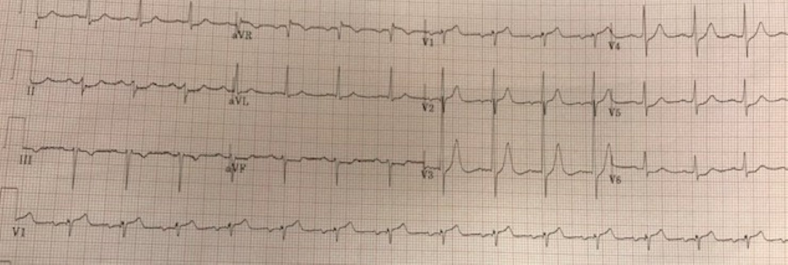
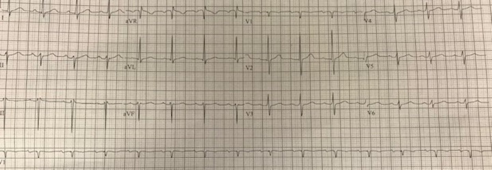
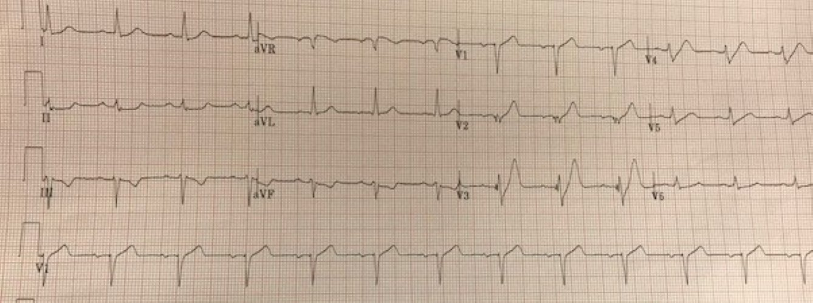
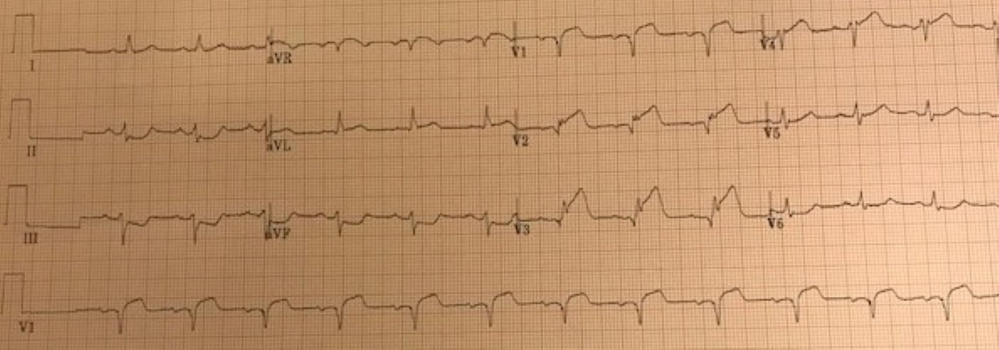
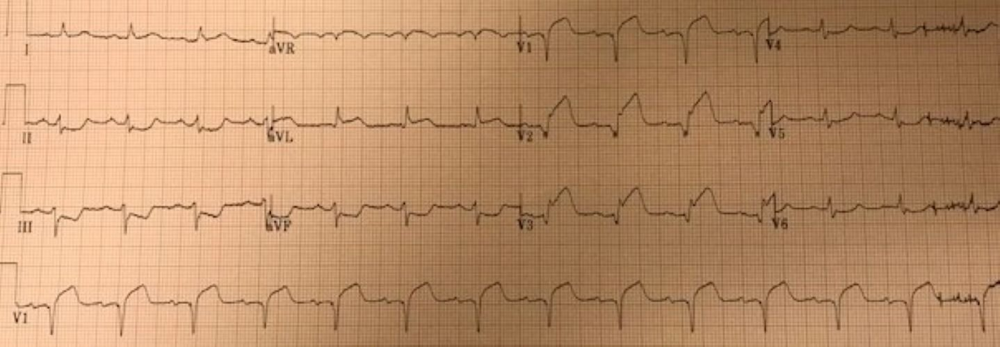
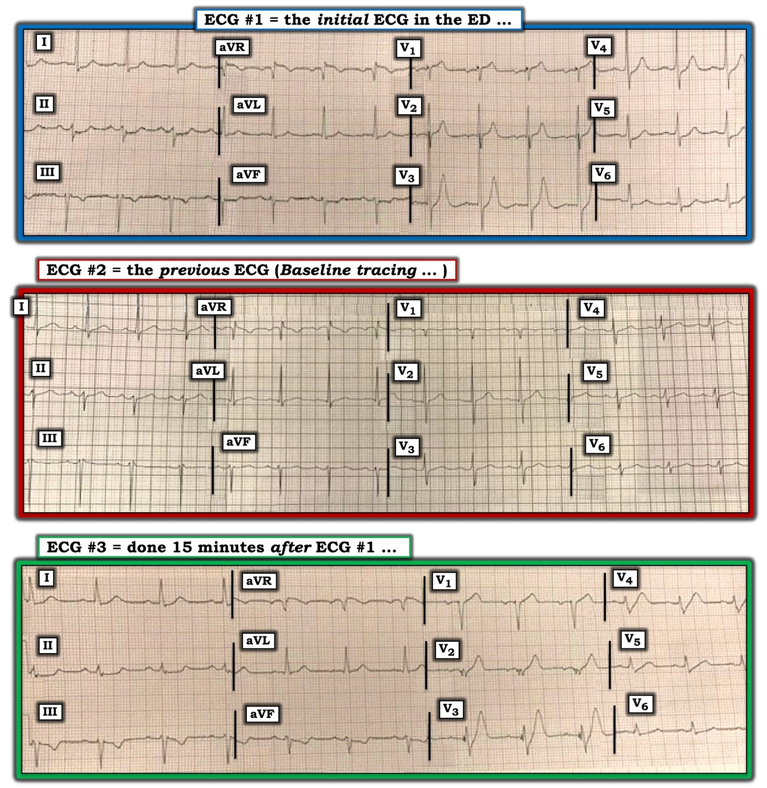

14/02/2020 — Một người đàn ông ở độ tuổi 50 bị “đau do đầy hơi”
Bản dịch tiếng Việt của bài "A man in his 50s with “gas pain”" – Dr. Smith’s ECG Blog. Giữ nguyên toàn bộ 8 hình ảnh của bản gốc.
Tác giả: Pendell Meyers, ca bệnh do một người giấu tên (Anonymous) gửi đến
Một người đàn ông ở độ tuổi 50 có tiền sử đái tháo đường típ 2, tăng huyết áp (HTN) và rối loạn lipid máu (HLD) đến khám vì đau ngực / đau bụng trên từng cơn trong một ngày. Cơn đau đã làm ông thức giấc trước đó, và ông mô tả đó là “đau do đầy hơi” (gas pain), khu trú ở vùng thượng vị và lan lên trên. Các dấu hiệu sinh tồn trong giới hạn bình thường. Lúc đến viện bệnh nhân đang đau, vã mồ hôi và trông có vẻ bệnh nặng.
Đây là điện tâm đồ lúc phân loại (triage) của ông (xin lỗi vì chất lượng ảnh, không thể lấy được ảnh tốt hơn từ người gửi):




Điện tâm đồ lúc đến viện cho thấy nhịp xoang tần số gần 100 nhịp/phút. Có ST chênh xuống (STD) ở V3-V6 (rõ nhất ở V4-5) và ở các chuyển đạo II, aVF, I và aVL. Do ST chênh xuống lan tỏa, tất yếu sẽ có ST chênh lên (STE) ở aVR (chuyển đạo aVerage Reciprocal — chuyển đạo soi gương “trung bình” của phần còn lại của điện tâm đồ).
Nếu đứng riêng lẻ, hình ảnh này biểu thị tình trạng mất cân bằng cung-cầu lan tỏa mà không có tắc hoàn toàn khu trú; khi đó chẩn đoán phân biệt sẽ rất rộng, gồm bất kỳ nguyên nhân nào gây mất cân bằng cung-cầu toàn bộ mức độ nặng, kể cả hội chứng vành cấp (ACS) và nhiều quá trình khác. Tuy nhiên, có ST chênh lên ở V1 kèm sóng T có diện tích lớn, là sóng T tối cấp.
Điều này phù hợp với hình ảnh mà chúng tôi đã mô tả nhiều lần, kể cả gần đây: ST chênh lên kín đáo và sóng T tối cấp ở V1 kèm ST chênh xuống ở các chuyển đạo trước tim bên, gợi ý tắc LAD (cụ thể hơn là tắc gần hoàn toàn, ngay trước khi xuất hiện hình ảnh tắc hoàn toàn).
Tôi chỉ gửi email điện tâm đồ lúc đến viện cho Dr. Smith, không kèm bất kỳ bệnh sử nào, và ông trả lời “LAD. Chưa tắc hoàn toàn. 99%. Dòng chảy TIMI 1.”
Nếu bạn chưa nhận ra, bạn phải xem các link dưới đây để thấy nhiều ví dụ khác cho đến khi bạn hiểu vì sao điện tâm đồ này phù hợp với hình ảnh đó:
A man in his sixties with chest pain, tachypnea, and hypertension (Một người đàn ông sáu mươi mấy tuổi bị đau ngực, thở nhanh và tăng huyết áp)
A 40 year old man with chest pain since last night (Một người đàn ông 40 tuổi đau ngực từ đêm qua)
A man in his sixties with chest pain at midnight with undetectable troponin (Một người đàn ông sáu mươi mấy tuổi đau ngực lúc nửa đêm, troponin không phát hiện được)
How long would you like to wait for your Occlusion MI to show a STEMI? Sometimes serial ECGs minimizes the delay. (Bạn muốn chờ bao lâu để nhồi máu cơ tim do tắc của bạn biểu hiện thành STEMI? Đôi khi các điện tâm đồ liên tiếp giúp giảm tối đa sự chậm trễ.)
What will you do for this patient transferred to you who is now asymptomatic? (Bạn sẽ làm gì cho bệnh nhân được chuyển đến bạn và hiện đã hết triệu chứng này?)
Crushing Chest pain, but the ECG is not obvious; later there is both RBBB and LBBB (Đau ngực dữ dội như bị đè ép, nhưng điện tâm đồ không rõ ràng; về sau xuất hiện cả RBBB lẫn LBBB)
35 yo woman with LAD occlusion manifesting with only hyperacute Ts and inferior ST depression, also missed by computer (Phụ nữ 35 tuổi bị tắc LAD chỉ biểu hiện bằng sóng T tối cấp và ST chênh xuống ở thành dưới, cũng bị máy tính bỏ sót)
Cơn đau tăng lên trong vòng 15 phút đầu và điện tâm đồ ghi lại này được thực hiện:


Đây là hình ảnh de Winter kinh điển ở V3 và V4 (đoạn khởi đầu ST chênh xuống kèm sóng T tối cấp). V1-V4 có sóng T tối cấp. ST chênh xuống soi gương ở các chuyển đạo thành dưới. Chúng tôi cho rằng sự chuyển biến từ điện tâm đồ lúc đến viện sang điện tâm đồ này biểu thị quá trình đi từ tắc gần hoàn toàn (~99%, dòng chảy ~TIMI1) đến tắc hoàn toàn.
Phòng thông tim (cath lab) được kích hoạt ngay lập tức. Họ đến tại giường và ghi thêm các điện tâm đồ liên tiếp:
25 phút:


Trong lúc chờ phòng thông tim sẵn sàng, một điện tâm đồ khác được ghi:


Khi thông tim, họ phát hiện và tái thông một chỗ tắc hoàn toàn LAD đoạn gần (không có hình ảnh). Đáng tiếc là cũng không có dữ liệu troponin đỉnh và siêu âm tim.
Bệnh nhân được xuất viện về nhà trong tình trạng tốt vài ngày sau đó.
Những điểm cần học:
Bạn phải học thuộc hình ảnh tắc LAD gần hoàn toàn này, cũng như hình ảnh sóng T de Winter. Nếu bạn có thể can thiệp ở giai đoạn sớm này, bạn sẽ cứu vớt được rất nhiều cơ tim. Một số bệnh nhân sẽ không tiến triển (hoặc không tiến triển nhanh như vậy) thành STEMI rõ ràng, như trong ca này. Tuy vậy, họ cũng sẽ được lợi ích to lớn từ chụp mạch vành cấp cứu nhờ chặn trước sự tiến triển thành nhồi máu xuyên thành.
Ngay cả trong một ca như ca này, khi OMI tiến triển thành STEMI rõ ràng, việc đọc điện tâm đồ một cách chuyên sâu ngay từ giai đoạn sớm nhất, vượt ra ngoài mô hình STEMI, giúp tái tưới máu nhanh hơn và hạn chế mức độ nhồi máu của bệnh nhân này.

===================================
BÌNH LUẬN CỦA TÔI, bởi KEN GRAUER, MD (14/2/2020):
===================================
Tôi nghĩ ca này là một ví dụ tuyệt vời cho thấy chúng ta có thể học hỏi như thế nào qua việc xem xét hồi cứu các bản ghi liên tiếp.
- GHI NHẬN công lao của Dr. Meyers và Dr. Smith, những người đã ngay lập tức nhận ra tình trạng tắc LAD sắp xảy ra
- Mặc dù tôi hoàn toàn đồng ý về sự cần thiết phải thông tim kịp thời ở người đàn ông độ tuổi 50 có các yếu tố nguy cơ và triệu chứng mới này — ban đầu tôi đã không nhận ra “động mạch thủ phạm”.
Tôi nghĩ có lẽ đáng để tìm hiểu TẠI SAO tôi lại mất nhiều thời gian hơn mong muốn để nhận ra “động mạch thủ phạm”.
- ĐIỂM THEN CHỐT (PEARL) — Một trong những cách tốt nhất để mài giũa kỹ năng đọc điện tâm đồ — là xem xét hồi cứu các bản ghi liên tiếp ở những ca mà bạn biết giải phẫu mạch vành. Quay lại những điện tâm đồ mà có thể lần đầu nhìn bạn đã không nhận ra hết các dấu hiệu — thường khiến ta khiêm tốn hơn, và mang lại hiểu biết vô cùng sâu sắc (đặc biệt khi bạn biết “đáp án” mà thông tim đã tiết lộ).
- Thông tim trong ca này đã xác nhận tắc LAD đoạn gần cấp. Đối chiếu diễn tiến triệu chứng của bệnh nhân này tại khoa cấp cứu (ED) với diễn tiến tương ứng trên các điện tâm đồ liên tiếp cho chúng ta biết (theo Dr. Meyers & Dr. Smith) — rằng điện tâm đồ ban đầu tại ED ( = điện tâm đồ #1 trong Hình 1) biểu hiện hẹp LAD mức độ nặng, nhưng vẫn chưa tắc hoàn toàn.
- Chỉ về sau (khi điện tâm đồ #3 được ghi) — thì LAD đoạn gần mới bị tắc hoàn toàn.


SUY NGHĨ HỒI CỨU CỦA TÔI về Ca bệnh này — Tôi khuyến khích xem lại 7 ca mà Dr. Meyers đã cung cấp link ở trên — mỗi ca đều cho thấy điện tâm đồ tắc LAD cấp. KHÔNG bao giờ có 2 điện tâm đồ giống hệt nhau — vì vậy mắt ta càng xem nhiều hình ảnh mà chúng ta “biết” đáp án — thì ta càng nhận ra tốt hơn (và nhanh hơn) những hình ảnh MẤU CHỐT này của tắc LAD cấp.
Dù vậy — tôi nhận ra “động mạch thủ phạm” ở mỗi ca trong 7 ca này dễ dàng hơn so với ở điện tâm đồ #1. Các dấu hiệu điện tâm đồ đã giúp tôi nhận ra OMI do LAD trong 7 ca này bao gồm:
- Ngoài ST chênh xuống ở các chuyển đạo thành dưới — một số trong 7 bản ghi này có ST chênh lên ở chuyển đạo aVL (thường là một manh mối tuyệt vời gợi ý tắc LAD đoạn gần). Lưu ý rằng không có ST chênh lên ở chuyển đạo aVL của điện tâm đồ #1 trong Hình 1.
- Một số trong 7 bản ghi này có ST thẳng đuỗn và/hoặc chênh lên kín đáo-nhưng-chắc chắn ở ít nhất 2 (nếu không phải cả 3) chuyển đạo trước. Lưu ý rằng không có ST chênh lên ở các chuyển đạo V2, V3 hay V4 trong điện tâm đồ #1.
- Hình dạng của ST chênh lên bất thường ở chuyển đạo V1 trong một số trong 7 bản ghi này rõ ràng là dạng vòm (tức là cấu hình “mặt mếu”). Đoạn ST ở chuyển đạo V1 của điện tâm đồ #1 không có dạng vòm (tức là nó dốc lên = cấu hình “mặt cười”). Dr. Meyers đã tinh ý nhận thấy rằng thực sự có ST chênh lên ở chuyển đạo V1 của điện tâm đồ #1 với “sóng T có diện tích lớn trông như tối cấp”. CẠM BẪY — Có lẽ vì biên độ phức bộ QRS ở chuyển đạo V1 của điện tâm đồ #1 quá nhỏ, nên rất dễ bỏ sót rằng điểm J ở chuyển đạo này thực sự chênh lên 1 mm so với đường nền đoạn PR. Bình thường, sóng T ở chuyển đạo V1 có thể dương — nhưng nó không nên lớn bất tương xứng như ở điện tâm đồ #1 (và bình thường sóng T ở chuyển đạo V6 phải lớn hơn sóng T ở chuyển đạo V1 — nhưng điều này không đúng ở điện tâm đồ #1!).
- Một số trong 7 bản ghi này có ít nhất một (hoặc nhiều hơn) sóng T ở chuyển đạo trước rõ ràng đầy hơn ở đỉnh và/hoặc rộng hơn ở đáy so với những gì chúng ta thấy ở điện tâm đồ #1. Rõ ràng, sóng T ở chuyển đạo V3 của điện tâm đồ #1 cao hơn và nhọn hơn mức thường thấy — nhưng nó hẹp ở đỉnh, và tương đối hẹp ở đáy.
SUY NGHĨ về điện tâm đồ #2 (bản ghi nền): Theo Dr. Meyers — chẩn đoán tắc LAD sắp xảy ra ở bệnh nhân có triệu chứng mới này có thể (và nên) được đưa ra chỉ dựa trên điện tâm đồ #1. Dù vậy — việc có được một bản ghi nền (được trình bày ở điện tâm đồ #2) xác nhận rằng các dấu hiệu điện tâm đồ trong điện tâm đồ #1 đúng là cấp tính:
- ST chênh xuống lan tỏa thấy ở điện tâm đồ #1 không có trên bản ghi trước đó!
- Sóng ST-T ở chuyển đạo V1 của điện tâm đồ #2 hoàn toàn dẹt. Điều này xác nhận rằng hình ảnh tối cấp của sóng ST-T ở chuyển đạo V1 của điện tâm đồ #1 là mới!
- Các sóng T cao bất tương xứng và nhọn rõ rệt ở các chuyển đạo V2, V3 và V4 của điện tâm đồ #1 đều là mới!
SUY NGHĨ về điện tâm đồ #3: Lý do điện tâm đồ #3 được ghi chỉ 15 phút sau điện tâm đồ #1 — là vì đau ngực của bệnh nhân tăng lên. Theo Dr. Meyers — điện tâm đồ #3 giờ đây cho thấy hình ảnh sóng T de Winter kinh điển. Lưu ý những điểm sau:
- Bắt đầu từ điểm J chênh xuống vài milimét (rõ nhất ở chuyển đạo V3 và V4 của điện tâm đồ #3) — một đoạn ST dốc lên đi lên tới các sóng T rất nổi bật (với một sóng T khổng lồ ở chuyển đạo V3). Hãy chú ý các sóng T ở hầu hết chuyển đạo ngực đã trở nên đầy ở đỉnh và rộng ở đáy như thế nào so với ở điện tâm đồ #1.
- BẠN CÓ THẤY mất sóng R rõ rệt ở các chuyển đạo trước của điện tâm đồ #3? Sóng R ở các chuyển đạo V2, V3 và V4 còn cao trong điện tâm đồ #1. Phần đầu phân mảnh của phức bộ QRS ở chuyển đạo V2 và V3 (với sóng Q khởi đầu ở V2) + hình ảnh sóng T de Winter kinh điển — cho chúng ta biết rằng chỗ hẹp LAD đoạn gần mức độ nặng giờ đây đã tắc hoàn toàn.
QUAY LẠI với điện tâm đồ #1: Xét đến hình dạng của bản ghi nền ở bệnh nhân này — và giờ đây khi đã biết điện tâm đồ sẽ trông như thế nào sau 15 phút (tức là ở điện tâm đồ #3) — sẽ dễ dàng hơn nhiều để thấy:
- Rằng ST chênh lên kín đáo-nhưng-có thật kèm sóng T lớn bất tương xứng (khi xét đến kích thước nhỏ của QRS) ở chuyển đạo V1 của điện tâm đồ #1 là dấu hiệu sớm báo trước tình trạng ST thẳng đuỗn tối cấp và sóng T đầy lên rõ ràng hơn mà chúng ta thấy ở chuyển đạo V1 của điện tâm đồ #3.
- Rằng khi nhìn lại, các sóng T ở chuyển đạo V2, V3 và V4 của điện tâm đồ #1 đều rõ ràng là tối cấp — và cùng với điểm J chênh xuống rõ ràng là bất thường ở chuyển đạo V3, V4 của điện tâm đồ #1 — chúng ta đang thấy dấu hiệu sớm của hình ảnh sóng T de Winter thực thụ sắp sửa hình thành. ĐIỀU CỐT LÕI: Thay vì ST chênh xuống lan tỏa không khu trú kèm ST chênh lên ở chuyển đạo aVR — bức tranh tổng thể ở điện tâm đồ #1 cho thấy dấu hiệu rõ ràng của tắc LAD đoạn gần sắp xảy ra. Ca này mang lại hiểu biết rất sâu sắc về CÁCH mà hình ảnh sóng T de Winter có thể hình thành.
- LƯU Ý: Để biết thêm về hình ảnh sóng T de Winter (bao gồm Hình minh họa các dạng điện tâm đồ khác nhau, trích từ Thư gửi NEJM gốc năm 2008 của de Winter và cs.) — Vui lòng XEM Bình luận của tôi trong bài đăng ngày 2 tháng Năm năm 2019).
Xin CẢM ƠN Dr. Meyers đã trình bày ca bệnh mang tính hướng dẫn này!